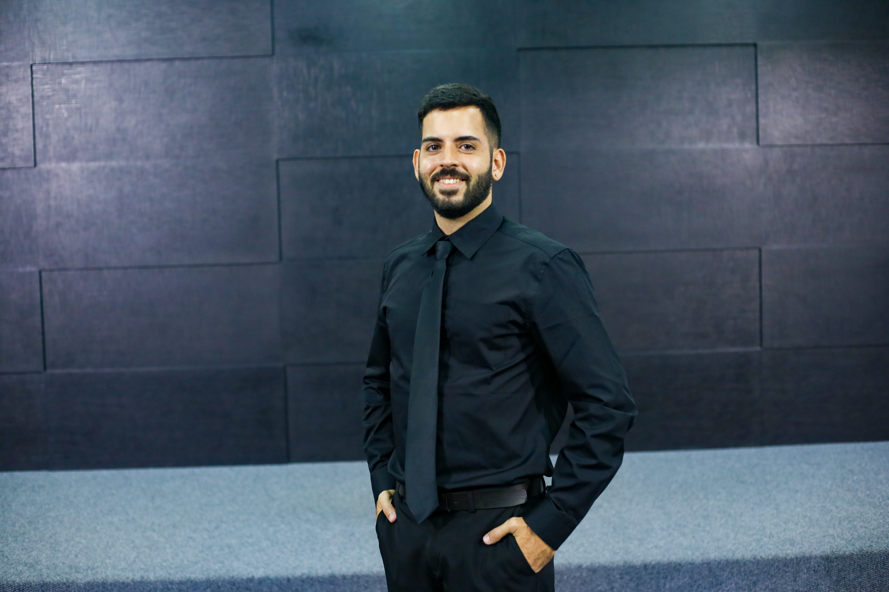

Olá! Seja muito bem vindo.
Me chamo Mateus Amorim Marques, sou cristão, graduado no "Centro de Treinamento Biblico Rhema".
Desenvolvedor de Software | Cientista de Dados | Especialista em Banco de Dados
Sou um profissional apaixonado por tecnologia, desenvolvimento de software e análise de dados. Minha formação em Ciência de Dados e minha especialização em Engenharia de Software me permitem unir o melhor dos dois mundos: construir sistemas eficientes e escaláveis enquanto extraio valor estratégico dos dados.
Desenvolvimento de Software: Experiência em back-end e arquitetura de software, desenvolvendo aplicações robustas e escaláveis.
Banco de Dados: Modelagem, otimização e gerenciamento de bancos SQL/NoSQL, garantindo alta performance e confiabilidade.
Ciência de Dados: Transformação de dados em insights estratégicos, utilizando estatística, machine learning e visualização de dados.
Atualmente, busco desafios que envolvam engenharia de software, bancos de dados e soluções inteligentes baseadas em dados. Meu objetivo é desenvolver aplicações eficientes, estruturadas e orientadas a dados para resolver problemas complexos.
Pyton, SQL, R, HTML, CSS, JavaScript, PHP, PowerBI, Docker, AWS...
Sempre aprendendo, sempre construindo!
Graduado em Ciência de Dados pela "Universidade Cruzeiro do Sul Virtual".
Cursando Engenharia de Software na "Universidade Cruzeiro do Sul Virtual" (Previsão 2028).
Celular: +55 (83) 98876-9445
E-mail: mateusamorimtec@gmail.com